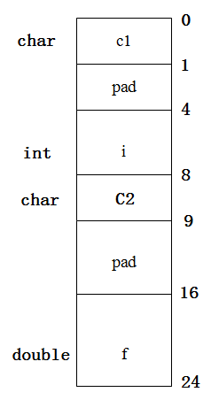
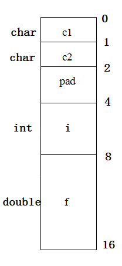

在每年各个公司的笔试题中，有一种典型的问题就是计算sizeof()的大小问题。在这里，我们对这类问题做一个全面的归纳总结，包含如何 计算结构体，位域，数组，字符串，指针，C++中的class等所有内容。 大家在以后遇到这类问题，就应该信心十足了。当然，掌握这些计算，也不全是为了应付面试，更多的能加深对C的理解和掌握。能够进一步应用到平时的程序设计与调试中。
要做好sizeof相关的计算，首先得掌握C和C++里的一些基本类型的长度（注意，sizeof计算的值都是以字节（Byte）为单位）：
sizeof(char) 的长度为：1 sizeof(short) 的长度为：2 sizeof(int) 的长度为：4 sizeof(long) 的长度为：4(Win X86和X64都为4，Linux X86为4,X64为8） sizeof(float) 的长度为：4 sizeof(double)的长度为：8 sizeof(bool) 的长度为:1(C++里) sizeof(BOOL) 的长度为:4（windows平台）
sizeof(p)的长度：x86为4，x64为8，其中p为指针类型变量，如char *p，也就是说，在X86平台，指针的长度是4，在X64平台，指针的长度是8。
要正确计算sizeof（结构体）的大小，需要理解和掌握好数据对齐的概念。 数据对齐分为自然对齐和强制对齐两种方式。
1．自然对齐
各个类型自然对齐，即其内存地址必须是其类型本身的整数倍。结构体对齐到其中成员最大长度类型的整数倍。计算机中内存空间按照字节划分，从理论上讲似乎对任何类型的变量的访问可以从任何地址开始，但实际情况是在访问特定类型变量的时候经常在特定的内存地址访问，这就需要各种类型数据按照一定的规则在空间上排列，而不是顺序的一个接一个的排放，这就是对齐。
各个硬件平台对存储空间的处理上有很大的不同。一些平台对某些特定类型的数据只能从某些特定地址开始存取。比如有些架构的CPU在访问一个没有进行对齐的变量的时候会发生错误，那么在这种架构下编程必须保证字节对齐。其他平台可能没有这种情况，但是最常见的是如果不按照适合其平台要求对数据存放进行对齐，会在存取效率上带来损失。比如有些平台每次读都是从偶地址开始，如果一个int型（假设为32位系统）如果存放在偶地址开始的地方，那么一个读周期就可以读出，而如果存放在奇地址开始的地方，就需要2个读周期，并对两次读出的结果的高低字节进行拼凑才能得到该数据。
无论如何，为了提高程序的性能，数据结构（尤其是栈）应该尽可能地在自然边界上对齐。原因在于，为了访问未对齐的内存，处理器需要作两次内存访问；然而，对齐的内存访问仅需要一次访问。
一个字或双字操作数跨越了4字节边界，或者一个四字操作数跨越了8字节边界，被认为是未对齐的，从而需要两次总线周期来访问内存。一个字起始地址是奇数但却没有跨越字边界被认为是对齐的，能够在一个总线周期中被访问。
某些操作双四字的指令需要内存操作数在自然边界上对齐。如果操作数没有对齐，这些指令将会产生一个通用保护异常（#GP）。双四字的自然边界是能够被16整除的地址。其他的操作双四字的指令允许未对齐的访问（不会产生通用保护异常），然而，需要额外的内存总线周期来访问内存中未对齐的数据。
自然对齐应该遵守如下两条规则：
1）数据成员对齐规则：
在默认情况下，各成员变量存放的起始地址相对于结构的起始地址的偏移量:sizeof(它的基本类型)或其倍数。如果该成员为非基本成员，则为其子成员中最大的基本类型的整数倍。
2）整体对齐规则：
结构的总大小也有个约束条件：最大sizeof(基本类型)的整数倍
问题：一个C语言程序如下：
typedef struct _a
{
char c1;
long i;
char c2;
double f;
}a;
typedef struct _b
{
char c1;
char c2;
long i;
double f;
}b;
void main(void)
{
printf("Size of double, long, char = %d, %d, %d\n",
sizeof (double), sizeof (long), sizeof (char));
printf("Sizeof a, b = %d, %d\n", sizeof (a), sizeof (b));
}
该程序在SPARC/Solaris工作站上的运行结果如下：
sizeof of double, long, char = 8, 4, 1 sizeof of a, b = 24, 16
结构体类型a 和 b 的域都一样，仅次序不同，为什么它们需要的存储空间不一样？
分析：此题为中国科学院研究生入学考试题。考查了结构体自然对齐的规则。下面画出结构的存储图1。
图1结构体a自然对齐存储结构
如图1所示为结构体a在自然对齐后的存储结构，从图中可以看出：c1为char类型，占一个字节。之后为了让i自然对齐，因此必须填充3个字节。之后i为int类型，占4个字节。c2是char类型，占用1个字节。之后的f为double类型，为了让f对齐到8的整数倍地址必须填充7个字节。之后是f的存储大小占8个字节。所以，a的存储大小为：
sizeof(a)=1+3+4+1+7+8=24。
如图2所示为结构体b在自然对齐后的存储结构，从图中可以看出：c1占用1个字节，c2占用1个字节，为了让i自然对齐而填充2个字节，i占用了4个字节，f占用了8个字节。
图2结构体b自然对齐存储结构
所以，b的存储大小为：
sizeof(b)=1+1+2+4+8=16。
2．强制对齐
除了自然对齐外，还有另外一种对齐方式：
#pragma pack(push) // 保存对齐状态
#pragma pack(n) // 定义结构对齐到n
定义结构
#pagman pack(pop) // 恢复对齐状态
上面的预编译语句将定义的结构体强制对齐到n。#pragma pack(n)来设定变量以n字节对齐方式。强制对齐应该遵守如下两条对齐规则：
1）数据成员对齐规则：
n字节对齐就是说变量存放的起始地址的偏移量：min(sizeof(基本类型)，n)或其倍数。
2）整体对齐规则：
结构的总大小也有个约束条件：min(最大的sizeof(基本类型)，n)的倍数。
也就是说：
第一、如果 n 大于等于该变量所占用的字 节数，那么偏移量必须满足默认的对齐方式；如果 n 小于该变量的类型所占用 的字节数，那么偏移量为 n 的倍数，不用满足默认的对齐方式。
第二：结构的总大小也有个 约束条件，分下面两种情况：如果 n 大于所有成员变量类型所占用的字节数，那么结构的总大小必须为占用空间最大的变量占用的空间数的倍数； 否则必须为 n 的倍数。
#pragma pack(8)
struct s1
{
short a;
long b;
};
struct s2
{
char c;
s1 d;
long long e;
};
struct s3
{
char c;
short a;
long b;
long long e;
};
#pragma pack()
1.sizeof(s1)=? sizeof(s2) = ? sizeof(s3) = ?
2.s2的c后面空了几个字节接着是d?
分析：此题为微软公司的一道笔试题，同样考查了关于结构对齐的规则。只不过这里不是自然对齐，而是用了#pragma pack()来规定了对齐的方式。
首先看s1。由于#pragma pack(8)要求8字节对齐，但s1中所有成员都比8小，所以各个成员只需要按照自然对齐即可，所以a占2个字节，b占4个字节，a后面需要补齐2字节，才能使long类型的b自然对齐。然后b占4个字节，因此整个s1结构共占用：2+2(pad)+4=8字节。
再看s2。c占1个字节，d为s1结构体成员，s1结构体成员根据对齐规则，按照其中最大成员long的4字节对齐，所以c之后需要补3字节才能让d达到4字节对齐。对于x86，long long数据类型为8字节，所以存完d后，需要在后面补4个字节，让e 8字节对齐。因此s2结构共占用：1+3(pad)+8+4(pad)+8=24。
最后看s3。c占1个字节，由于a为short类型，所以c之后需要填充1个字节，才能让a对齐。此时，b已经对齐，占4个字节。而e大小为8个字节，已经对齐。所以s3结构共占用：1+1(pad)+2+4+8=16。
答案：sizeof(s2) = 24，sizeof(s3) = 16。
那么在编程中如何处理字节对齐情况呢？如果在编程的时候要考虑节约空间的话，那么只需要假定结构的首地址是0，然后各个变量按照上面的原则进行排列即可，基本的原则就是把结构中的变量按照类型大小从小到大声明，尽量减少中间的填补空间。还有一种就是为了以空间换取时间的效率，显式的进行填补空间进行对齐，比如有一种使用空间换时间做法是显式的插入pad成员：
struct Demo
{
char a;
char pad[3]; // 使用空间换时间
int b; // 对齐到4的整数倍
}
pad成员对程序没有什么意义，它只是起到填补空间以达到字节对齐的目的，当然即使不加这个成员通常编译器也会自动填补对齐，自己加上它只是起到显式的提醒作用。
3．栈上对齐方式
与结构体的自然对齐不同，在X86平台，栈上对齐方式是整数相关类型按照4字节对齐，浮点数按照8字节对齐；在X64平台，栈上是按照 16字节对齐。
char s[] = "12345678";
sizeof(s)=?
sizeof(s)，是在计算s数组的长度。首先，s是一个字符数组，由字符串"12345678"初始化。所以，s的长度由"12345678"决定。而在C语言里，字符串是以'\0'结尾的。 所以"12345678"实际上由9个字符组成,每个字符占1个字节，所以：
所以，sizeof(s)值为9。 但是，当数组作为一个函数的参数，在函数内部使用sizeof计算的时候，数组已经退化为指针，这个时候，用sizeof来计算，就是指针的长度了。
例如：
void func(char s[])
{
printf("%d\n", sizeof(s);// 此处，s作为参数传进来，在函数内部退化为一个指针，
// 所以值为4(x86)或者8(x64)
}
char s[]="12345678";
printf("%d\n", sizeof(s)); // 此处是计算数组的长度，所以值为9
func(s);
// 此处把s当做一个参数，传递给了函数func。
在使用sizeof计算union类型的时候，整个union结构的大小等于union中最大成员的大小，并且必须是最大类型的整数倍。
例如：
typedef union
{
long i;
int k[5];
char c;
} DATE;
struct data
{
int cat;
DATE cow;
double dog;
} too;
DATE max; sizeof(struct data) = ?sizeof(max))=?
分析：
由于max是union DATE类型，那么其中最大的成员为k，所以sizeof(MAX)=k成员的长度=5*sizeof(int)=20
对于struct data结构体，按照自然对齐方法，计算出结果为：sizeof(struct data)=4+20+8=32
Ｃ语言提供了一种称为“位域”或“位段”的数据结构。因为有些信息在存储时，并不需要占用一个完整的字节，而只需占几个或一个二进制位。例如在存放一个BOOL值时，只有0和1 两种状态，用一位二进位即可。该结构可以节约存储空间。 所谓“位域”，就是把一个字节中的二进位划分为几个不同的区域，并说明每个区域的位数。每个域有一个域名，允许在程序中按域名进行操作。这样就可以把几个不同的对象用一个字节的二进制位域来表示。位域的定义形式为：
struct 位域结构名
{
位域列表
};
例如：
typedef struct _Demo
{
int a:4;
int b:4;
int c:2;
}Demo;
其中位域a占4位，位域b占4位，位域c占2位。那么定义位域需要注意些什么呢？定义位域需要注意以下几点：
1．一个位域必须存储在同一个字节中，不能跨两个字节。如一个字节所剩空间不够存放另一位域时，应从下一单元起存放该位域。也可以有意使某位域从下一单元开始。例如：
struct demo
{
unsigned a:4
unsigned :0 /*空域*/
unsigned b:8 /*从下一单元开始存放*/
unsigned c:4
}
在这个位域定义中，a占第一字节的4位，后4位填0表示不使用，b从第二字节开始，占用8位，c占用4位。
2．由于位域不允许跨两个字节，因此位域的长度不能大于一个字节的长度。
3．位域可以无位域名，这时它只用来作填充或调整位置。无名的位域是不能使用的。 例如：
struct demo
{
int a:1
int :2 /*该2位不能使用*/
int b:3
int c:2
};
从以上分析可以看出，位域在本质上就是一种结构类型，不过其成员是按位（bit）分配的。
下面来分析一下位域结构的大小与对齐问题。如果结构体中含有位域，那么其准则是：
1．如果相邻位域字段的类型相同，且其位宽之和小于类型的sizeof(类型)大小，则后面的字段将紧邻前一个字段存储，直到不能容纳为止；
2．如果相邻位域字段的类型相同，但其位宽之和大于类型的sizeof大小，则后面的字段将从新的存储单元开始，其偏移量为其类型大小的整数倍；
3．如果相邻的位域字段的类型不同，则各编译器的具体实现有差异，VC6采取不压缩方式，即不同位域字段存放在不同的位域类型字节中；而GCC和DEV-C++都采取压缩方式。
问题：试分析下面结构的大小：
struct demo1
{
int i: 8;
int j: 4;
int a: 3;
double b;
};
struct demo2
{
int i: 8;
int j: 4;
double b;
int a:3;
};
struct demo3
{
char a:1;
char :2;
long b:3;
char c:2;
};
struct demo4
{
char a:1;
char :2;
char b:3;
long c:2;
};
struct demo5
{
char a:1;
char :2;
char b:3;
char c:2;
};
对于结构demo1：i，j，a三个位域之和为15bit，小于sizeof(int)=4*8=32bit，所以根据规则1：i，j，a紧邻存储在一起，共占用4个字节。b为double类型，占用8个字节，根据对齐规则，b必须存储在8的整数倍地址处。于是，在存储了i，j，a之后，将填充4个字节，再存储b。于是：
sizeof(demo1) = 4（i，j，a的长度之和）+4（填充的长度）+8（b的长度）=16
对于结构demo2：位域i，j之和小于32bit，根据规则1，它们将紧邻存储在一起，共占用4个字节。紧接着由于b为double类型，长度为8个字节，于是在i，j之后先填充4个字节，再存储b的8个字节。再接着存储位域a，4个字节。整个结构体应该按照其中最大成员b对齐，即必须是8的整数倍。于是：
sizeof(demo2) = 4（i，j的长度）+4（填充长度）+8（b的长度）+4（a的长度）+4（填充长度）=24
同理对于结构demo3，demo4，demo5：
sizeof(demo3) = 1（a和无名位域的长度）+3（填充长度）+4（b的长度）+1（c的长度）+3（填充长度）=12
sizeof(demo4) = 1（a，无名位域，和b的长度）+3（填充长度）+4（c的长度）=8
sizeof(demo5) = 1（位域a，b，c与无名位域之和，根据规则1，它们类型一致，且和小于8bit，所以紧邻存储）
class A
{
public:
A()
{
}
void fn1();
void fn2();
protected:
char a;
int b;
static int c;
};
A a;
sizeof(A)=? sizeof(a)=?
计算类的大小，直接为其数据成员的大小（按照自然对齐方式对齐），但static变量并不包含在其中。
所以sizeof(A)=sizeof(a)=变量a的长度+对齐pad3个字节+变量b的长度=1+3+4=8
class A
{
public:
A(){
}
void fn1();
void fn2();
protected:
int a;
private:
int b;
};
class B:public A
{
public:
B(){
}
void fn3();
void fn4();
private:
int c;
};
B b;
sizeof(b)=?
类B继承于类A。所以，B的大小包含了A的大小再加上自己数据的大小。所以：
sizeof(b)=sizeof(A)+成员c的长度=8+4=12。
class A
{
public:
A(){
}
virtual void fn1(){
}
void fn2();
protected:
int a;
int b;
};
class B:public A
{
public:
B(){
}
virtual void fn1(){
}
void fn3();
void fn4();
private:
int c;
};
B b;
sizeof(b)=?
在这种情况下，类B继承自类A，而且类B中还有一个虚函数，因此，类B数据中还包含了一个指向虚函数表的指针。
因此sizeof(b)=sizeof(A)+成员c的长度+虚函数指针的长度=8+4+4=16
空类和空结构体的长度：
class Null
{
}
struct _Null
{
}
sizeof(Null)=? sizeof(struct _Null)=?
解答：
sizeof(Null)=1;
sizeof(struct _Null)=1。
题目：
char *p1 = "12345678";
char p2[] = "12345678";
char p3[1024]="12345678";
char p4[] = {'1','2','3','4','5','6','7','8'};
sizeof(p1)=?
sizeof(p2)=?
sizeof(p3)=?
sizeof(p4)=?
strlen(p1)=?
strlen(p2)=?
strlen(p3)=?
strlen(p4)=?
分析：
p1是一个字符指针，指向了静态常量区的一个常量字符串，"12345678"。所以，sizeof(p1)=指针的长度=4；strlen(p1)=字符串"12345678"的长度（不含'\0')，所以是8。
p2是一个字符数组，由静态常量区的"12345678"进行初始化。所以sizeof(p2)是计算数组p2的长度，所以结果为"12345678"的所有字符的长度（含'\0')，所以是9。 strlen(p2)也是在计算"12345678"的长度（不含'\0')，所以是8。
p3是一个字符数组，由静态常量区的"12345678"进行初始化，但长度为1024。 所以，sizeof(p3)=1024;strlen(p3)为字符串"12345678"的长度（不含'\0')，所以是8。
p4是一个字符数组，由字符'1','2','3','4','5','6','7','8'进行初始化， 这样初始化与"12345678"进行初始化的区别是 前者不包含'\0'。因此，sizeof(p4)=8。由于p4作为一个字符数组，并不以'\0'结尾， 所以strlen(p4)在计算字符串长度的时候，找不到结束符'\0'，会发生字符串溢出。
所以，最后答案为：
sizeof(p1)=4 sizeof(p2)=9 sizeof(p3)=1024 sizeof(p4)=8 strlen(p1)=8 strlen(p2)=8 strlen(p3)=8 strlen(p4)=字符串溢出，值不确定，甚至会引起程序崩溃
sizeof是一个运算符，并不是一个函数，通过查看其反汇编代码即可看出，不存在什么函数调用。
题目1：请设计一个宏，用来计算数组的长度。
#define ARRAYLEN(a) sizeof(a)/sizeof(a[0])
题目2：sizeof是函数吗？是在程序编译的时候计算的还是运行时？
sizeof是操作符而不是函数。sizeof是在程序编译的时候就计算完成了，而不是在程序运行的时候计算。
本页共377段，10356个字符，20003 Byte(字节)